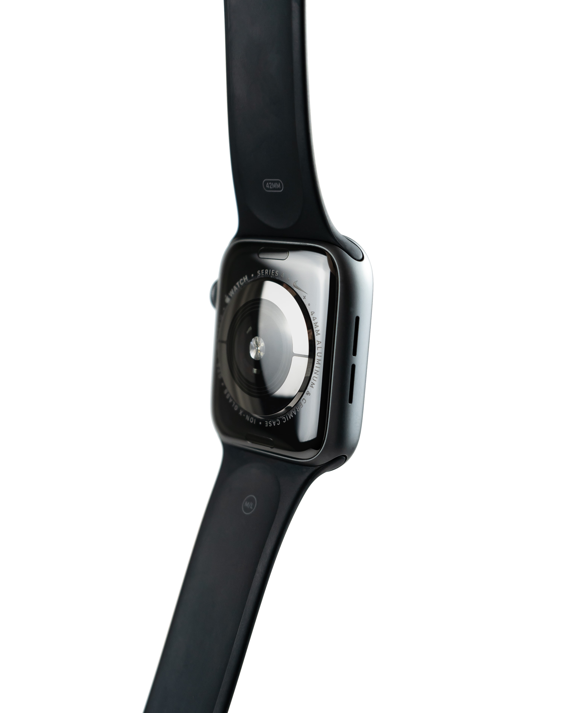
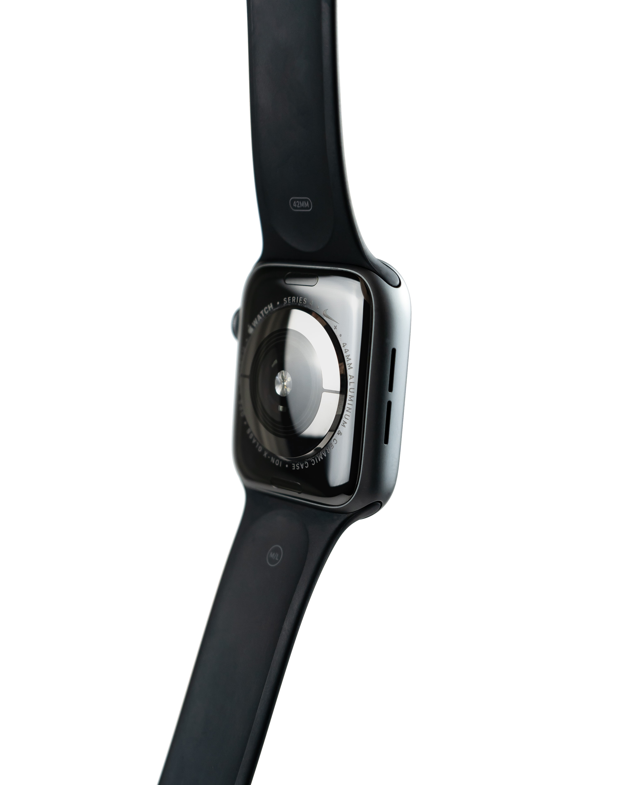

La première montre qui écoute votre coeur

Notifications de fréquence cardiaque élevée ou faible
Détecte les premiers signes d'anomalie cardiaque grâce à la mesure de votre taux d'oxygène
Notifications de fréquence cardiaque élevée ou faible
Enregistrement de votre électro - cardiogramme automatiquement transmis à votre professionnel de santé
Détecte les premiers signes d'anomalie cardiaque grâce à la mesure de votre taux d'oxygène
Enregistrement de votre électro - cardiogramme automatiquement transmis à votre professionnel de santé
 

TROUVER UN POINT DE VENTE
En enregistrant régulièrement la fréquence cardiaque grâce à un capteur PPG spécialement conçu pour elle, KARDIAK vous permet de suivre votre cœur de jour comme de nuit.
KARDIAK vous envoie une notification lorsqu'un rythme cardiaque irrégulier est détecté. Elle vous conseille alors d'enregistrer un électrocardiogramme (ECG) pour contrôler si tout va bien.
Le capteur PPG multi longueurs d'onde de KARDIAK permet de mesurer le taux d’oxygène dans le sang par l’émission et la réflexion des rayons rouges et infrarouges sur les vaisseaux sanguins.